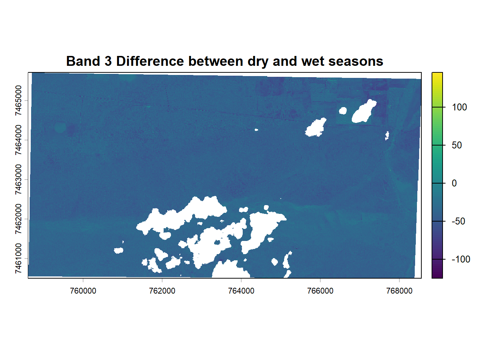
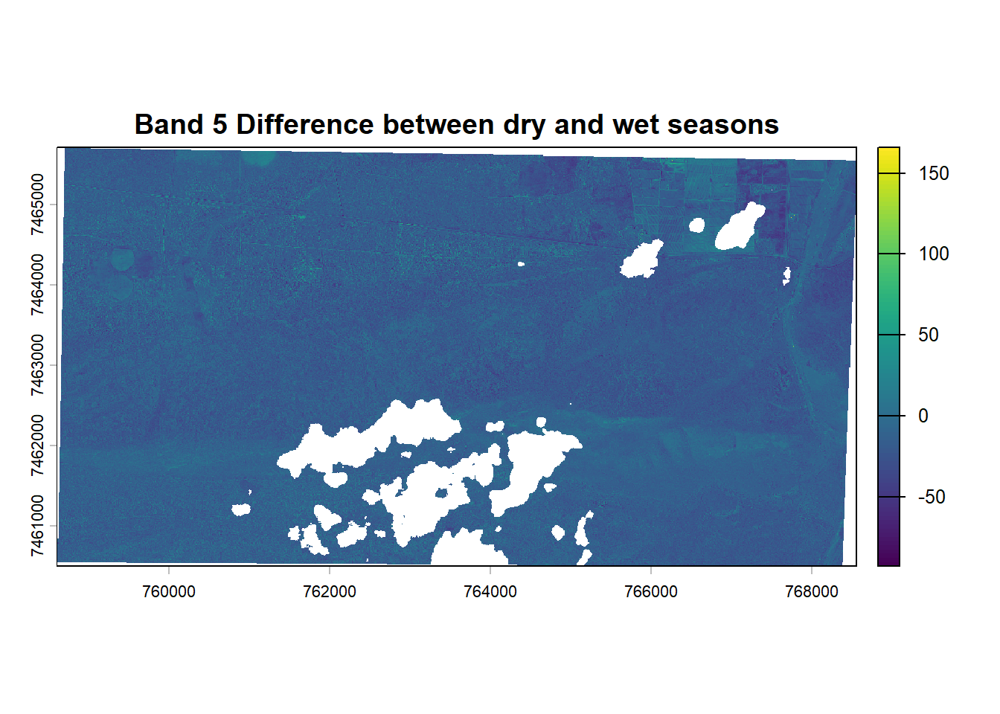
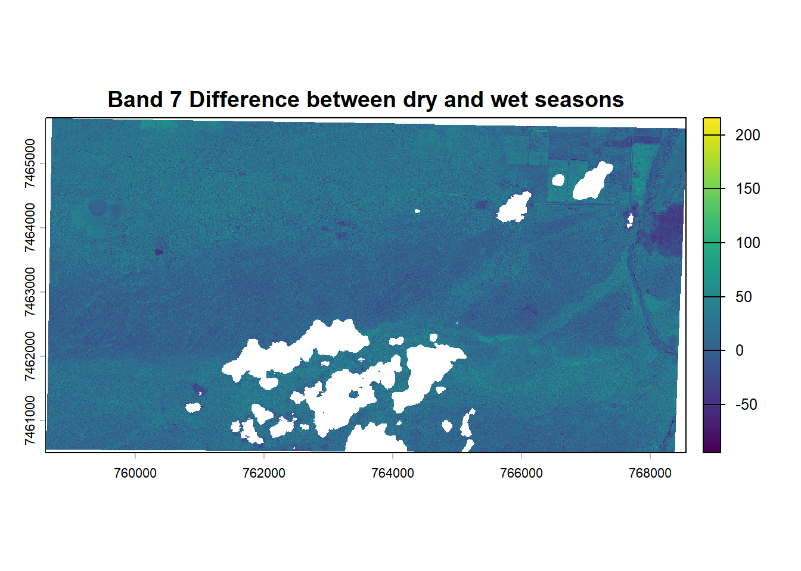
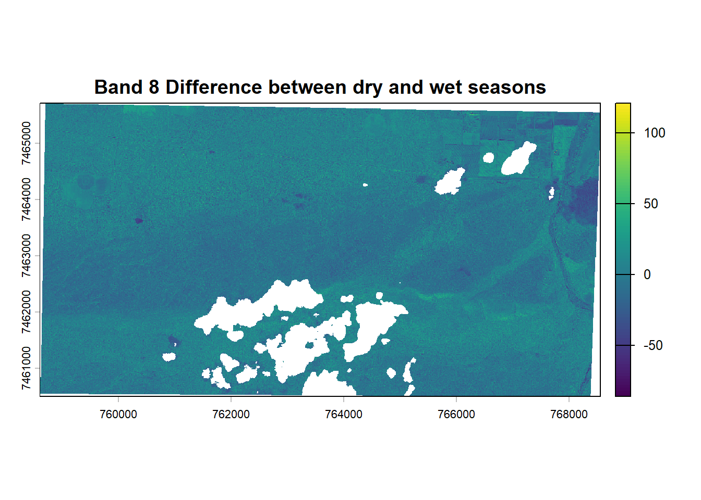
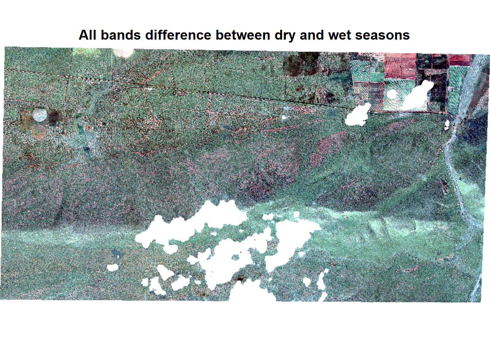
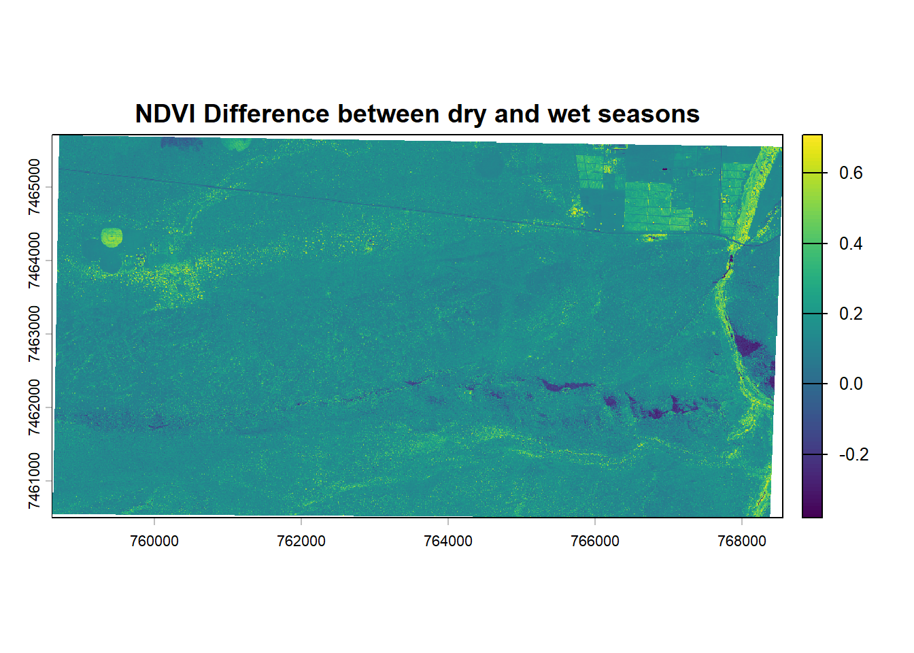
The aim of this study is to test and evaluate machine learning (U-Net) modelling approaches and satellite remotely sensed data to map baobab distribution. We address the following research questions: (i) Does U-Net model segmentation performance in mapping baobabs differ with spatial grain of imagery? (ii) Does baobab canopy sizes influence U-Net model performance? (iii) Does using multi-seasonal improve the U-Net model performance? (iv) Does the landscape complexity influence the U-Net model performance? We hypothesise that model performance metrics decrease as we increase the spatial grain of satellite imagery. The comparisons of the performance on different spatial grain will be valuable for identifying appropriate cost-effective satellite datasets for the development of population monitoring tools.
This study evaluates U-Net, a deep learning segmentation model, to map baobab trees using satellite remote sensing data across different landscapes. We designed an experiment comparing model performance across satellite imagery with different spatial grains to test how image resolution influences segmentation accuracy. We trained and validated the model using manually annotated baobab canopy data. We also assessed whether canopy size, landscape complexity, and the inclusion of multi-seasonal imagery affected model accuracy. We tested each factor independently to identify the conditions under which the U-Net performs best, so that we can inform which satellite datasets are most suitable for mapping baobab distribution.
The study was conducted at two sites (Kremetart Game Farm and Mapungubwe National Park) in the north of Limpopo province in South Africa. Both sites support populations of baobabs, but differ in land use and vegetation structure, providing a natural contrast for testing baobab mapping methods. Our access to Worldview-3 data restricted our study areas to 50 km² at each site. Focal area 1 covers 50 km2, encompassing some parts of Kremetart Game Farm and its surrounding areas (Figure 8a), located on the northern slopes of the Soutpansberg mountains. The area is centred on 22.42° S latitude and 30.33° E longitude. This study area was chosen due to the high density of baobab trees and the support of the landowners. It experiences three distinct seasonal changes: hot-wet (late November to April), cold-dry (May to August), and hot-dry (September to early November) seasons (Schulze, 1997). Temperatures range from 16°C to 40°C during the hot-wet season, 12°C to 22°C in the cold-dry season, and 12°C to 22°C during the hot-dry season (Kephe et al., 2016). The vegetation is low, sparse woodland mainly dominated by a variety of species of mopane. The vegetation in the Soutpansberg mountain range area was broadly described as the Savanna Biome (Mucina and Rutherford, 2006).
Focal area 2 covers 50 km2 within the Mapungubwe National Park (Figure 8b), located on the southern banks of the Limpopo River, which borders Botswana and Zimbabwe to the north. The Park spans approximately 280 km², centred on -22.23137° S latitude and 29.42133° E longitude, and is part of the Greater Mapungubwe Transfrontier Conservation Area, which covers an area of 3,065 km² (Coetsee and Wigley, 2016). The area was chosen as a comparison to our core study site and due to the presence of baobabs. The park has a mean annual temperature of 21.6 °C, with monthly minimum averages ranging from 7.2 °C to 20.3 °C and maximum averages from 24.7 °C to 32.0 °C (O’connor and Kiker, 2004). The vegetation is classified into three main types: Subtropical Alluvial Vegetation, Musina Mopane Bushveld, and Limpopo Ridge Bushveld, while riparian areas along the Limpopo River are classified as Lowveld Riverine Forest (Mucina and Rutherford, 2006).
We acquired three satellite images from the WorldView-3 sensor (Maxar; 0.31 m panchromatic, 1.24 m multispectral, eight bands), captured on different dates. Images were taken in two seasons: the dry season (leaf-off) and the wet season (leaf-on) for the Kemetart site, in July and February. At Mapungubwe National Park, we used only the July image.
To ensure spatial alignment, scenes were co-registered using the function in the RStoolbox package (V1.0.2.1, Leutner et al., 2025) based on maximum mutual information as the similarity measure. To improve spatial resolution, we pansharpened the WorldView-3 and GeoEye-1 images. In order to test the influence of multi-seasonal data to improve classification, we performed cloud and shadow masking on our February Kremetart image using a deep learning model called OmniCloudMask (Wright et al., 2025), using the Reticulate package (V1.42.0, Ushey et al., 2025). No atmospheric correction was applied to the data.
To enhance variation in tree crowns within the images, we applied image differentiation by subtracting the February image from the July image (see figures below). However, the results did not meet our expectations because the tree crowns appeared blurred and are unlikely to provide additional value for the training dataset.






To train the model, we manually digitised 689 tree crown polygons as vector features and stored them in GeoPackage format, with each polygon having a class value identifying baobab crowns (Class = 1). For each digitised crown polygon, the centroid coordinates were computed and used as the centre point for a fixed-size image chip. Patches of 128 × 128 pixels were extracted, centred on each crown centroid (see figure below). We generated 1, 168 image chips, 479 from wet season image (Kremetart only) and 689 from dry season (Kremetart and Mapungubwe images). For each image patch, a binary mask was generated by rasterising the individual crown polygon and assigning pixel values of 1 to crown pixels and NA to background. Patches whose bounding extent extended beyond the image boundary were excluded to avoid edge effects and cutting the crown. All extracted patches were saved as GeoTIFF files. This process resulted in a dataset of image and mask pairs, where each pair corresponds to a baobab crown and its surrounding context, which was used for model training and validation.
Spatial autocorrelation in remotely sensed datasets causes nearby pixels to share similar values, which can reduce the independence between training and test samples and may cause the model to produce biased results (Karasiak et al., 2022). To address spatial autocorrelation, we deployed a ten-fold spatial cross-validation strategy by clustering image chips at their centroid using a k-means clustering resampling plan (Wang et al., 2023). On each of the ten cross-validation iterations, nine folds were put together to form the training set, and the withheld fold served as the independent validation set, such that the model was never validated on locations geographically similar to those used for training.
The U-Net deep learning architecture has recently become widely adopted in vegetation remote sensing due to its accuracy and flexibility (Brandt et al., 2020; Huang, K. et al., 2021; Reiner et al., 2023). U-Net, originally developed for medical imaging, is a convolutional neural network (CNN) specifically designed for semantic segmentation tasks, characterised by its symmetric U-shape with a contracting path (encoder), an expansive path (decoder), and skip connections (Ronneberger et al., 2015). The encoder extracts contextual information, while the decoder provides precise localisation, and the skip connections allow the integration of low-level features like edges and textures with high-level features such as object shapes, producing more accurate segmentations (Lomeo and Singh, 2022; Ronneberger et al., 2015). Because of these design features, U-Net has established strong performance in various remote sensing image analysis applications, including the segmentation of baobab trees in satellite images of the Sahelian region (Huang, K. et al., 2024).
We adopted the model architecture of Ronneberger et al. (2015). We built and trained the U-Net model using torch, torchvision, and luz packages in R on all the imagery with different spatial grain (Figure 3). The architecture of the U-net model we employed is composed of four sequential double convolutional layers in the encoder, max pooling-based downsampling, a bottleneck block, and nearest neighbour convolution upsampling with skip connections that concatenate encoder feature maps to decoder layers. We applied batch normalisation to improve model training efficiency, as suggested by (Ioffe and Szegedy, 2015). The ReLU activations were used to support stable and efficient training. Finally, the model was configured with a combined dice and focal loss function suitable for multi-class semantic segmentation and optimised using the Adam algorithm to mitigate class imbalance.
Our input images had eight multispectral bands and a target (labelled masks) with two classes (0,1). We chipped images into 128 x 128 pixels, and pixel values were normalised to convert the values to a range of zero and one. To mitigate spatial autocorrelation, we trained and validated the U-Net model, using a 5-fold cross-validation approach (Koldasbayeva et al., 2024). The model output was a three-channel tensor corresponding to the defined classes (background, baobab, and non-baobab). To ensure that the model learns to identify tree features such as edges, textures, and shapes rather than just spatial positions, we applied data augmentation techniques, including horizontal flip and vertical flip, with a default 50% probability (Alomar et al., 2023). We trained the model for 100 epochs with a batch size of eight, using a learning rate of 0.0001. We monitored the training process using the combined dice and focal loss function, and performance metrics such as Intersection over Union (IoU), precision, recall, F1-score, and accuracy for both training and validation sets. The best-performing model will be selected based on the lowest validation loss.
To select an appropriate patch size, we first trained the model using three different data chip sizes: 512×512, 256×256, and 128×128 pixels. For each size, we monitored the training using the loss curves for both the training and validation sets (see Figure below). When training the model, our objectives were to obtain a smoothly decreasing loss curve (indicating stable gradient descent), and minimize the gap and variance between the training and validation loss (indicating better generalisation).Among the three chip sizes, the 128×128 pixels produced the most stable and loss curves, with lower variance between training and validation losses compared to 256×256 and 512×512. Based on these observations, we selected 128×128 patches for all subsequent analyses.#
All Metric_Plots
To achieve balanced representation across crown-size categories for model training, we implemented an equal-percentage stratification approach. Crown areas were measured by identifying connected components in the masks using functions in the terra package, with pixel counts converted to square meters using the imagery’s spatial resolution (0.3 m). This resulted in equal representation (approximately 33% each) across small, medium, and large size classes. This stratification method prevented size-based bias in model training and validation datasets. We then trained the model separately on each crown size category and compared the performance metrics across the three categories to evaluate how crown size influenced model performance.
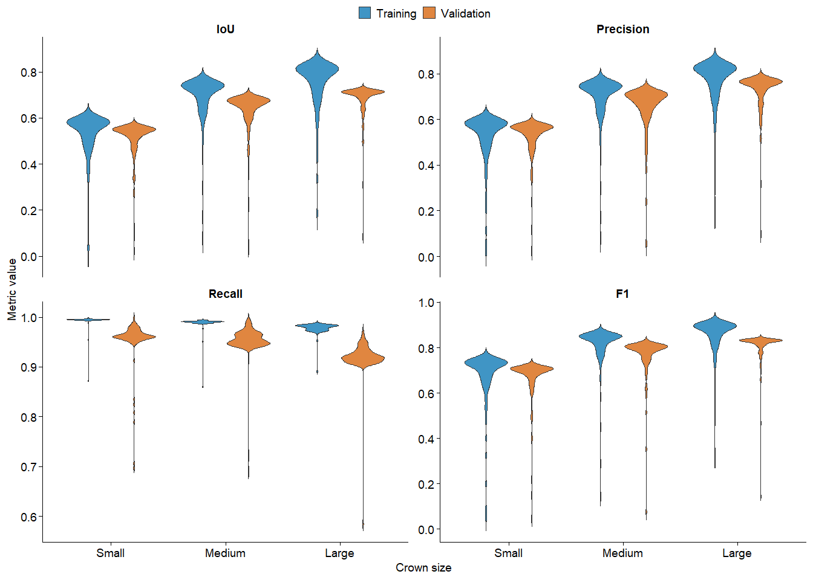
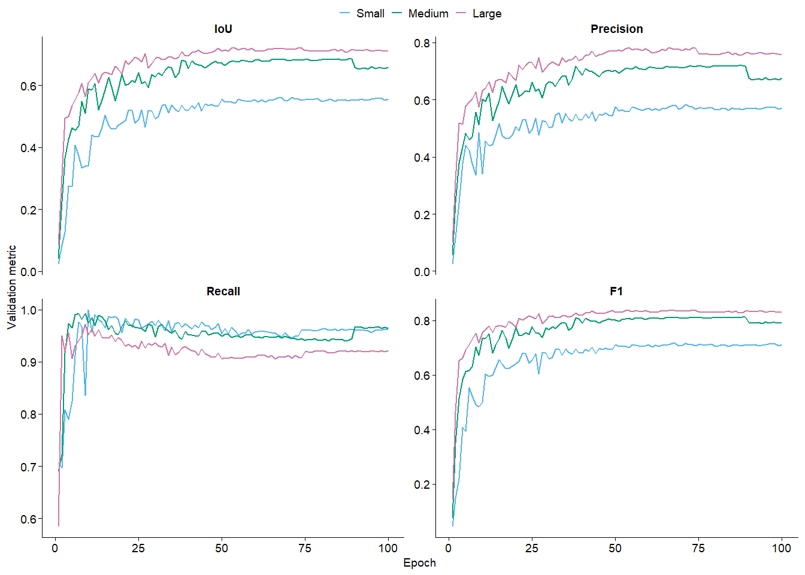
Violin plots were used to visualize the full distribution of metric values across the three crown size categories, allowing us to assess differences in model performance and variability between training and validation sets (training phase) for each size class. The training phase plots show that the model performed better on large and medium crowns compared to small crowns, with higher median values and less variability in metrics such as IoU and F1-score for medium and large crowns. This suggests that the model may struggle to accurately segment smaller crowns, potentially due to their reduced pixel representation and more complex shapes, which can be more challenging for the model to learn effectively.
#| fig.align: "center"
#| echo: false
#| warning: false
#| message: false
metric_cols <- c("iou", "prec", "rec", "f1")
read_folder <- function(folder_path, size_label) {
files <- list.files(folder_path, pattern = "\\.csv$", full.names = TRUE)
files |>
set_names(tools::file_path_sans_ext(basename(files))) |>
map(read.csv) |>
bind_rows(.id = "fold") |>
mutate(size = size_label)
}
all_data <- imap(size_dirs, \(path, lbl) read_folder(path, lbl)) |>
bind_rows()
#names(all_data)
per_fold <- all_data |>
filter(set == "valid") |>
group_by(size, fold) |>
slice_max(epoch, n = 1, with_ties = FALSE) |>
ungroup() |>
mutate(
fold = str_extract(fold, "\\d+") |> as.integer(),
size = factor(size,
levels = c("small", "medium", "large"),
labels = c("Small", "Medium", "Large"))
) |>
arrange(size, fold) |>
select(size, fold, all_of(metric_cols)) |>
mutate(across(all_of(metric_cols), \(x) round(x, 3)))
fold_table <- per_fold |>
gt(groupname_col = "size", rowname_col = "fold") |>
cols_label(iou = "IoU", prec = "Precision", rec = "Recall", f1 = "F1") |>
cols_align("center", everything()) |>
tab_stubhead(label = "Fold") |>
tab_header(title = "Model performance across folds and crown sizes") |>
summary_rows(
groups = everything(),
columns = all_of(metric_cols),
fns = list(Mean = ~ mean(., na.rm = TRUE))
) |>
grand_summary_rows(
columns = all_of(metric_cols),
fns = list("Overall mean" = ~ mean(., na.rm = TRUE))
) |>
fmt_number(columns = all_of(metric_cols), decimals = 3) |>
tab_options(
table.font.names = "Helvetica",
table.font.size = px(11),
heading.title.font.size = px(12),
heading.title.font.weight = "bold",
heading.align = "left",
row_group.font.weight = "bold",
column_labels.font.weight = "bold",
column_labels.border.top.style = "solid",
column_labels.border.top.width = px(1),
column_labels.border.top.color = "black",
column_labels.border.bottom.style = "solid",
column_labels.border.bottom.width = px(1),
column_labels.border.bottom.color = "black",
table.border.top.style = "none",
table.border.bottom.style = "solid",
table.border.bottom.width = px(1),
table.border.bottom.color = "black",
table_body.hlines.style = "none",
table_body.vlines.style = "none",
summary_row.background.color = "#f5f5f5",
grand_summary_row.background.color = "#e8e8e8",
data_row.padding = px(4)
)
gtsave(fold_table, file.path(out_dir, "crown_sizes_table_folds.png"))file:///C:/Users/cp844/AppData/Local/Temp/Rtmp80ZzZq/file132483d89b2f.html screenshot completed| Model performance across folds and crown sizes | ||||
|---|---|---|---|---|
| Fold | IoU | Precision | Recall | F1 |
| Small | ||||
| 1 | 0.629 | 0.645 | 0.963 | 0.772 |
| 2 | 0.579 | 0.593 | 0.960 | 0.733 |
| 3 | 0.456 | 0.459 | 0.983 | 0.626 |
| 4 | 0.469 | 0.473 | 0.981 | 0.638 |
| 5 | 0.648 | 0.686 | 0.923 | 0.787 |
| 6 | 0.580 | 0.625 | 0.889 | 0.734 |
| Mean | 0.5601667 | 0.5801667 | 0.9498333 | 0.7150000 |
| Medium | ||||
| 1 | 0.617 | 0.621 | 0.989 | 0.763 |
| 2 | 0.728 | 0.825 | 0.862 | 0.843 |
| 3 | 0.752 | 0.788 | 0.943 | 0.858 |
| 4 | 0.649 | 0.671 | 0.952 | 0.787 |
| 5 | 0.643 | 0.654 | 0.974 | 0.783 |
| 6 | 0.725 | 0.758 | 0.944 | 0.840 |
| Mean | 0.6856667 | 0.7195000 | 0.9440000 | 0.8123333 |
| Large | ||||
| 1 | 0.732 | 0.772 | 0.934 | 0.845 |
| 2 | 0.734 | 0.813 | 0.884 | 0.847 |
| 3 | 0.653 | 0.755 | 0.828 | 0.790 |
| 4 | 0.733 | 0.753 | 0.965 | 0.846 |
| 5 | 0.729 | 0.752 | 0.959 | 0.843 |
| 6 | 0.759 | 0.865 | 0.861 | 0.863 |
| Mean | 0.7233333 | 0.7850000 | 0.9051667 | 0.8390000 |
| Overall mean | 0.6563889 | 0.6948889 | 0.933 | 0.7887778 |
To assess how image spatial grain influences U-Net performance, we ran multiple models independently trained with different image data. Starting with the original WorldView-3 image at 0.3 m, the resolution was resampled three-fold increase to 0.9 m, 2.7 m, and 8.1 m, which correspond broadly with widely used optical datasets.
To assess model performance across landscapes that differ in complexity, we train and validate model, and compare the performance metrics between two study sites: Kremetart Game Farm Area (hereafter referred to as Focal Area 1) and Mapungubwe National Park (hereafter referred to as Focal Area 2). The two areas differ in environmental complexity. Imagery from Focal Area 1 contains mixed land-cover types, including agricultural, open-canopy, and dense-canopy areas, which is more heterogeneous landscape for tree detection. In contrast, imagery from Focal Area 2 is dominated by open-canopy vegetation, which is a less heterogeneous landscape.
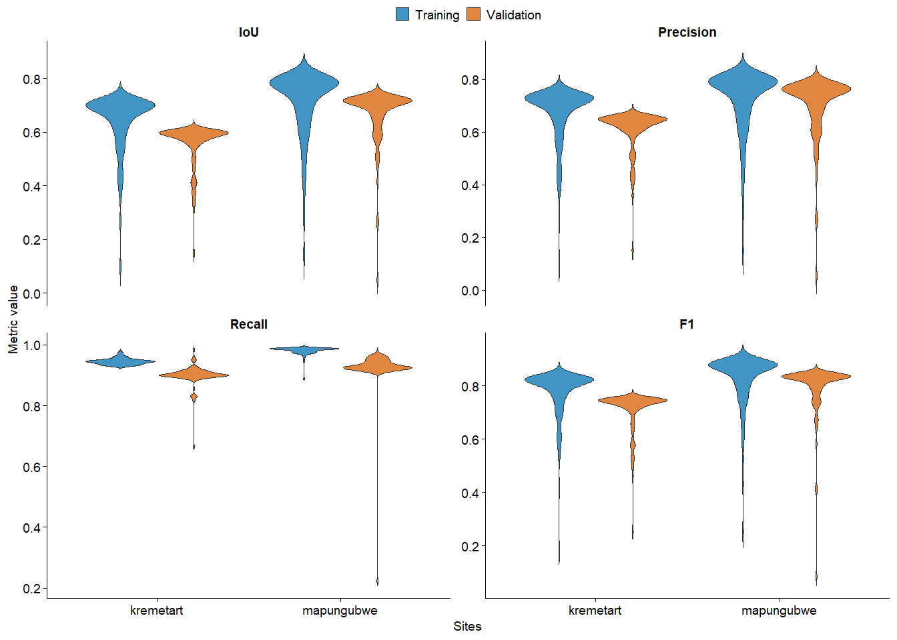
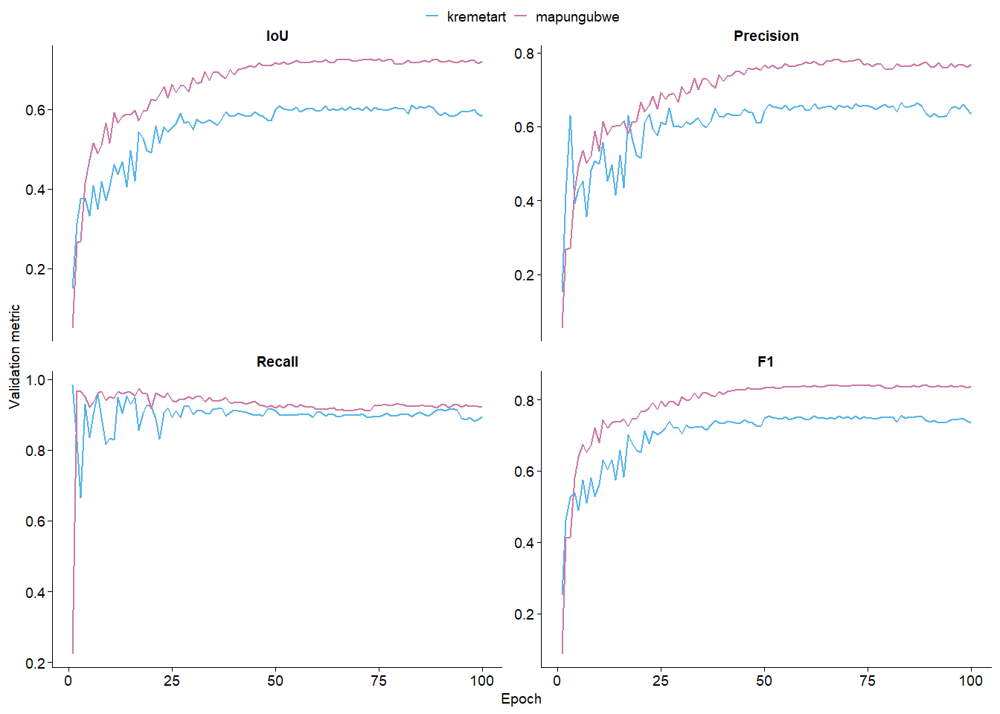
| Model performance across folds between focal area 1 and 2 | ||||
|---|---|---|---|---|
| Fold | IoU | Precision | Recall | F1 |
| kremetart | ||||
| 1 | 0.585 | 0.626 | 0.899 | 0.738 |
| 2 | 0.673 | 0.763 | 0.850 | 0.804 |
| 3 | 0.630 | 0.704 | 0.856 | 0.773 |
| 4 | 0.553 | 0.556 | 0.993 | 0.713 |
| 5 | 0.505 | 0.516 | 0.959 | 0.671 |
| 6 | 0.616 | 0.682 | 0.864 | 0.762 |
| Mean | 0.5936667 | 0.6411667 | 0.9035000 | 0.7435000 |
| mapungubwe | ||||
| 1 | 0.710 | 0.755 | 0.923 | 0.830 |
| 2 | 0.678 | 0.744 | 0.884 | 0.808 |
| 3 | 0.692 | 0.754 | 0.894 | 0.818 |
| 4 | 0.750 | 0.794 | 0.931 | 0.857 |
| 5 | 0.770 | 0.855 | 0.885 | 0.870 |
| 6 | 0.763 | 0.796 | 0.947 | 0.865 |
| Mean | 0.7271667 | 0.7830000 | 0.9106667 | 0.8413333 |
| Overall mean | 0.6604167 | 0.7120833 | 0.9070833 | 0.7924167 |
Violin plots showing results of model training and validation performance between two sites
To assess the influence of seasonality on model performance metrics, we trained three models on three datasets collected in dry-season (july), wet-season (february) and a combination of both datasets (dry-wet season) from focal area 1. We only used focal area because, that is where we had data for two seasons.
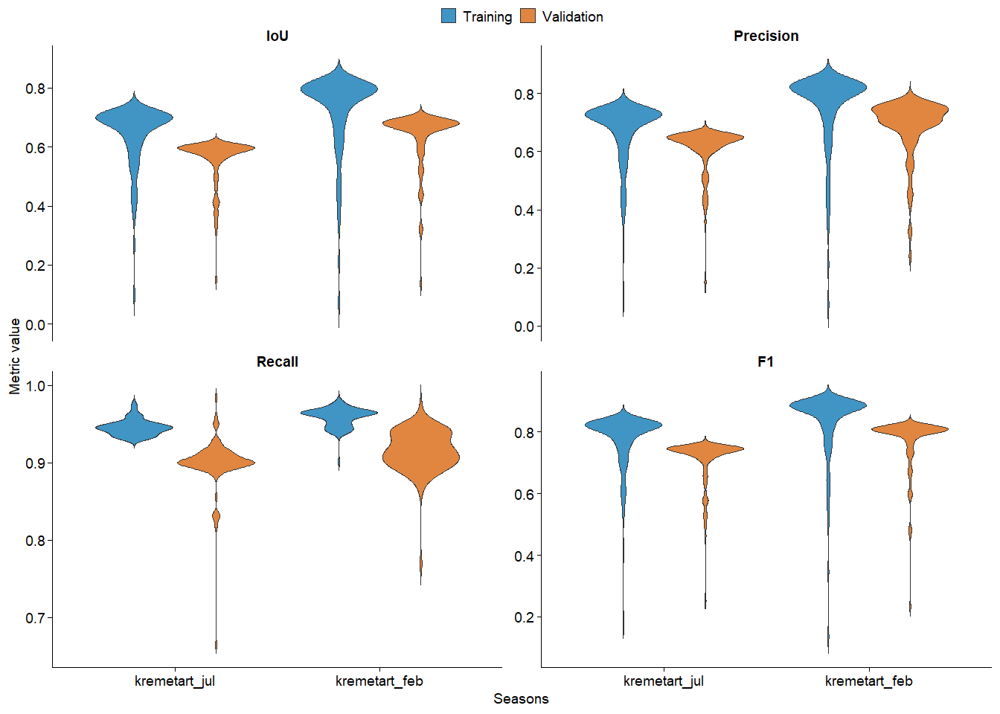
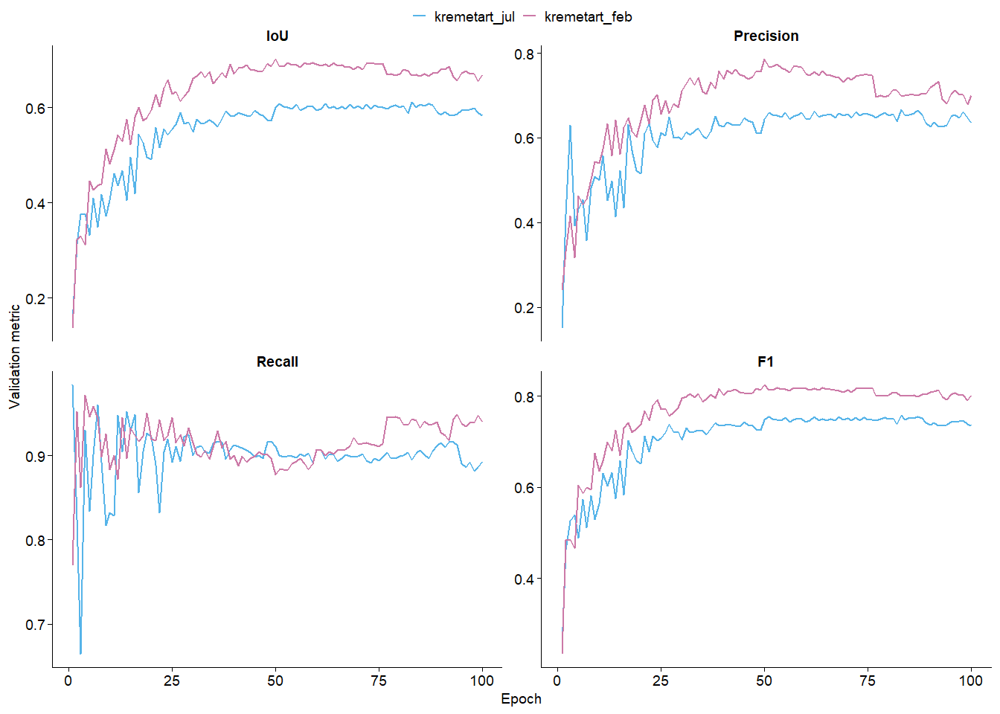
| Model performance across folds across seasons | ||||
|---|---|---|---|---|
| Fold | IoU | Precision | Recall | F1 |
| kremetart_jul | ||||
| 1 | 0.585 | 0.626 | 0.899 | 0.738 |
| 2 | 0.673 | 0.763 | 0.850 | 0.804 |
| 3 | 0.630 | 0.704 | 0.856 | 0.773 |
| 4 | 0.553 | 0.556 | 0.993 | 0.713 |
| 5 | 0.505 | 0.516 | 0.959 | 0.671 |
| 6 | 0.616 | 0.682 | 0.864 | 0.762 |
| Mean | 0.5936667 | 0.6411667 | 0.9035000 | 0.7435000 |
| kremetart_feb | ||||
| 1 | 0.670 | 0.700 | 0.940 | 0.802 |
| 2 | 0.701 | 0.762 | 0.897 | 0.824 |
| 3 | 0.739 | 0.863 | 0.838 | 0.850 |
| 4 | 0.664 | 0.682 | 0.961 | 0.798 |
| 5 | 0.694 | 0.774 | 0.870 | 0.819 |
| 6 | 0.708 | 0.858 | 0.802 | 0.829 |
| Mean | 0.6960000 | 0.7731667 | 0.8846667 | 0.8203333 |
| Overall mean | 0.6448333 | 0.7071667 | 0.8940833 | 0.7819167 |
Violin plots showing results of model training and validation performance across seasons
In order to meet the needs of ecological resource managers, we will conduct object-level evaluation by comparing the number of detected trees within a one square kilometre area to manually identified trees to quantify counting bias (After Huang, K. et al., 2024). To gain more insights into the model performance, we also undertook pixel-level evaluation using confusion matrices, precision, recall, and F1-score.
#| echo: false
#| warning: false
#| messages: false
#centred_feb_crown_prediction <- rast("C:/Users/cp844/OneDrive - University of Exeter/Data/Merged/My_Dataset/outputs/baobab_prediction_cropped2.tif")
#mixed_feb_crown_prediction <- rast("C:/Users/cp844/OneDrive - University of Exeter/Data/Merged/My_Dataset/outputs/baobab_prediction_mixed_patches.tif")
#mixed_july_crown_prediction <- rast("C:/Users/cp844/OneDrive - University of Exeter/Data/Merged/My_Dataset/julyall_prediction.tif")
#plot(centred_feb_crown_prediction, main = "centred_feb_crown_prediction")
#plot(mixed_feb_crown_prediction, main = "mixed_feb_crown_prediction")
#plot(mixed_july_crown_prediction, main = "mixed_july_crown_prediction")We conducted object-level validation by comparing manually delineated tree crown polygons. We selected two areas from each site that were well observed and excluded areas that we did not visit, as we do not know whether there were false positives. Each connected group of predicted tree pixels was isolated as an individual object. A match between predicted and the manually digitised crowns were determined by the overlap between their polygons.
To measure count and size errors, we measured the difference between the predicted tree crowns and the manually delineated tree crowns polygons. We computed a match rate of predicted baobab regions that are overlapping manually delineated tree crown polygons by applying a 20 % threshold. We also compared crown area class distributions (small/medium/large).
#| echo: false
#| warning: false
#| messages: false
# object-level tree detection validation
# helper to count connected objects in a binary raster
count_objects <- function(r) {
r_clean <- ifel(r == 1, 1, NA)
p <- patches(r_clean, directions = 8, zeroAsNA = TRUE)
length(unique(values(p, na.rm = TRUE)))
}
# load the data
polygons <- vect("C:/Users/cp844/OneDrive - University of Exeter/Data/Tree_Crown_Polygons/Site_one_Kremetart_class_one_tree_polygons.gpkg")
prediction <- rast("C:/Users/cp844/OneDrive - University of Exeter/Data/Merged/My_Dataset/outputs/krem_site_one_predictionresnet.tif")
# tidy up the class 1 (true) crown polygons
class1 <- polygons[polygons$Class == 1, ]
class1 <- project(class1, crs(prediction))
class1 <- crop(class1, ext(prediction))
stopifnot("No Class 1 polygons found after cropping" = nrow(class1) > 0)
N_true <- nrow(class1)
# mask out class 2 crowns from the prediction
class2 <- polygons[polygons$Class == 2, ]
class2 <- project(class2, crs(prediction))
class2 <- crop(class2, ext(prediction))
if (nrow(class2) > 0) {
class2_mask <- rasterize(class2, prediction, field = 1, background = NA)
prediction <- ifel(!is.na(class2_mask), NA, prediction)
rm(class2_mask)
}
# crop and threshold the prediction
class1_buffered <- buffer(class1, width = 50)
prediction_crop <- crop(prediction, ext(class1_buffered))
threshold <- 0.2
pred_bin <- prediction_crop > threshold
# turn the binary prediction into blob polygons
pred_binary_clean <- ifel(pred_bin == 1, 1, NA)
|---------|---------|---------|---------|
=========================================
|---------|---------|---------|---------|
=========================================
|---------|---------|---------|---------|
=========================================
|---------|---------|---------|---------|
=========================================
pred_poly$pred_id <- seq_len(nrow(pred_poly))
pred_poly <- makeValid(pred_poly)
class1 <- makeValid(class1)
N_pred <- nrow(pred_poly)
# match rate: how many true crowns are at least 20% covered by a blob
class1$gt_id <- seq_len(nrow(class1))
pred_poly$area_pred_m2 <- expanse(pred_poly)
class1$area_true_m2 <- expanse(class1)
intersection <- terra::intersect(pred_poly, class1)
stopifnot("No overlap geometries — check projection & extents." =
nrow(intersection) > 0)
intersection$inter_area_m2 <- expanse(intersection)
inter_df <- as.data.frame(intersection)
overlap_per_gt <- inter_df %>%
group_by(gt_id) %>%
summarise(total_inter_m2 = sum(inter_area_m2, na.rm = TRUE),
.groups = "drop")
gt_df <- as.data.frame(class1) %>%
left_join(overlap_per_gt, by = "gt_id") %>%
mutate(
total_inter_m2 = ifelse(is.na(total_inter_m2), 0, total_inter_m2),
coverage_pct = total_inter_m2 / area_true_m2
)
overlap_threshold <- 0.20
gt_df$matched_gt <- gt_df$coverage_pct >= overlap_threshold
match_rate_gt <- mean(gt_df$matched_gt)
# count error
count_error <- N_pred - N_true
# crown-area size-class comparison
size_breaks <- quantile(class1$area_true_m2,
probs = c(1/3, 2/3),
names = FALSE)
classify_size <- function(area_m2) {
cut(area_m2,
breaks = c(-Inf, size_breaks[1], size_breaks[2], Inf),
labels = c("Small", "Medium", "Large"),
right = FALSE)
}
class1$size_class <- classify_size(class1$area_true_m2)
pred_poly$size_class <- classify_size(pred_poly$area_pred_m2)
size_levels <- c("Small", "Medium", "Large")
true_tab <- table(class1$size_class)[size_levels]
pred_tab <- table(pred_poly$size_class)[size_levels]
true_counts <- as.integer(true_tab); true_counts[is.na(true_counts)] <- 0L
pred_counts <- as.integer(pred_tab); pred_counts[is.na(pred_counts)] <- 0L
size_dist <- tibble(
Size_Class = factor(size_levels, levels = size_levels),
N_true = true_counts,
N_pred = pred_counts,
Size_Error = pred_counts - true_counts,
Rel_Size_Error = ifelse(true_counts == 0,
NA_real_,
round((pred_counts - true_counts) / true_counts, 4))
)
# print the results
summary_metrics <- tibble(
Metric = c(
"N true trees (N_true)",
"N predicted blobs (N_pred)",
"Tree Counting Error (pred - true)",
sprintf("Match rate (GT crowns >=%.0f%% covered)", overlap_threshold * 100)
),
Value = c(
N_true,
N_pred,
count_error,
round(match_rate_gt, 4)
)
)
cat("\n-- Summary metrics --\n")
-- Summary metrics --# A tibble: 4 × 2
Metric Value
<chr> <dbl>
1 N true trees (N_true) 271
2 N predicted blobs (N_pred) 469
3 Tree Counting Error (pred - true) 198
4 Match rate (GT crowns >=20% covered) 0.775
Match rate of GT crowns covered >=20% by a blob: 77.49% (210 / 271)
-- Size-class distribution comparison --# A tibble: 3 × 5
Size_Class N_true N_pred Size_Error Rel_Size_Error
<fct> <int> <int> <int> <dbl>
1 Small 90 141 51 0.567
2 Medium 90 118 28 0.311
3 Large 91 210 119 1.31
Size-class breaks (m^2): Small < 92.1 <= Medium < 155.7 <= Large# size-class plot
size_plot_df <- tibble(
Size_Class = factor(rep(size_levels, 2), levels = size_levels),
Source = factor(rep(c("Ground Truth", "Predicted"), each = 3),
levels = c("Ground Truth", "Predicted")),
Count = c(true_counts, pred_counts)
)
p_size <- ggplot(size_plot_df,
aes(x = Size_Class, y = Count, fill = Source)) +
geom_col(position = position_dodge(width = 0.7), width = 0.6) +
geom_text(aes(label = Count),
position = position_dodge(width = 0.7),
vjust = -0.5,
size = 4) +
scale_fill_manual(values = c("Ground Truth" = "#1B5E20",
"Predicted" = "#1565C0")) +
scale_y_continuous(expand = expansion(mult = c(0, 0.12))) +
labs(title = "Crown-area size class: ground truth vs predicted",
x = "Size class",
y = "Number of crowns") +
theme_fancy() +
theme(legend.position = "top")
print(p_size)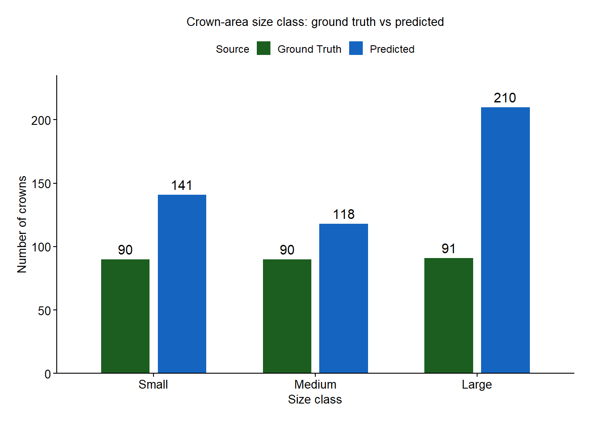
Site two
#| echo: false
#| warning: false
# helper to count connected objects in a binary raster
count_objects <- function(r) {
r_clean <- ifel(r == 1, 1, NA)
p <- patches(r_clean, directions = 8, zeroAsNA = TRUE)
length(unique(values(p, na.rm = TRUE)))
}
# load the data
polygons <- vect("C:/Users/cp844/OneDrive - University of Exeter/Data/Tree_Crown_Polygons/Site_one_mapungubwe_class_one_tree_polygons.gpkg")
prediction <- rast("C:/Users/cp844/OneDrive - University of Exeter/Data/Merged/My_Dataset/outputs/maps_site_one_predictionresnet.tif")
# tidy up the class 1 (true) crown polygons
class1 <- polygons[polygons$Class == 1, ]
class1 <- project(class1, crs(prediction))
class1 <- crop(class1, ext(prediction))
stopifnot("No Class 1 polygons found after cropping" = nrow(class1) > 0)
N_true <- nrow(class1)
# mask out class 2 crowns from the prediction
class2 <- polygons[polygons$Class == 2, ]
class2 <- project(class2, crs(prediction))
class2 <- crop(class2, ext(prediction))
if (nrow(class2) > 0) {
class2_mask <- rasterize(class2, prediction, field = 1, background = NA)
prediction <- ifel(!is.na(class2_mask), NA, prediction)
rm(class2_mask)
}
# crop and threshold the prediction
class1_buffered <- buffer(class1, width = 50)
prediction_crop <- crop(prediction, ext(class1_buffered))
|---------|---------|---------|---------|
=========================================
|---------|---------|---------|---------|
=========================================
|---------|---------|---------|---------|
=========================================
|---------|---------|---------|---------|
=========================================
|---------|---------|---------|---------|
=========================================
|---------|---------|---------|---------|
=========================================
|---------|---------|---------|---------|
=========================================
|---------|---------|---------|---------|
=========================================
pred_poly$pred_id <- seq_len(nrow(pred_poly))
pred_poly <- makeValid(pred_poly)
class1 <- makeValid(class1)
N_pred <- nrow(pred_poly)
# match rate: how many true crowns are at least 20% covered by a blob
class1$gt_id <- seq_len(nrow(class1))
pred_poly$area_pred_m2 <- expanse(pred_poly)
class1$area_true_m2 <- expanse(class1)
intersection <- terra::intersect(pred_poly, class1)
stopifnot("No overlap geometries — check projection & extents." =
nrow(intersection) > 0)
intersection$inter_area_m2 <- expanse(intersection)
inter_df <- as.data.frame(intersection)
overlap_per_gt <- inter_df %>%
group_by(gt_id) %>%
summarise(total_inter_m2 = sum(inter_area_m2, na.rm = TRUE),
.groups = "drop")
gt_df <- as.data.frame(class1) %>%
left_join(overlap_per_gt, by = "gt_id") %>%
mutate(
total_inter_m2 = ifelse(is.na(total_inter_m2), 0, total_inter_m2),
coverage_pct = total_inter_m2 / area_true_m2
)
overlap_threshold <- 0.20
gt_df$matched_gt <- gt_df$coverage_pct >= overlap_threshold
match_rate_gt <- mean(gt_df$matched_gt)
# count error
count_error <- N_pred - N_true
# crown-area size-class comparison
size_breaks <- quantile(class1$area_true_m2,
probs = c(1/3, 2/3),
names = FALSE)
classify_size <- function(area_m2) {
cut(area_m2,
breaks = c(-Inf, size_breaks[1], size_breaks[2], Inf),
labels = c("Small", "Medium", "Large"),
right = FALSE)
}
class1$size_class <- classify_size(class1$area_true_m2)
pred_poly$size_class <- classify_size(pred_poly$area_pred_m2)
size_levels <- c("Small", "Medium", "Large")
true_tab <- table(class1$size_class)[size_levels]
pred_tab <- table(pred_poly$size_class)[size_levels]
true_counts <- as.integer(true_tab); true_counts[is.na(true_counts)] <- 0L
pred_counts <- as.integer(pred_tab); pred_counts[is.na(pred_counts)] <- 0L
size_dist <- tibble(
Size_Class = factor(size_levels, levels = size_levels),
N_true = true_counts,
N_pred = pred_counts,
Size_Error = pred_counts - true_counts,
Rel_Size_Error = ifelse(true_counts == 0,
NA_real_,
round((pred_counts - true_counts) / true_counts, 4))
)
# print the results
summary_metrics <- tibble(
Metric = c(
"N true trees (N_true)",
"N predicted blobs (N_pred)",
"Tree Counting Error (pred - true)",
sprintf("Match rate (GT crowns >=%.0f%% covered)", overlap_threshold * 100)
),
Value = c(
N_true,
N_pred,
count_error,
round(match_rate_gt, 4)
)
)
cat("\n-- Summary metrics --\n")
-- Summary metrics --# A tibble: 4 × 2
Metric Value
<chr> <dbl>
1 N true trees (N_true) 61
2 N predicted blobs (N_pred) 183
3 Tree Counting Error (pred - true) 122
4 Match rate (GT crowns >=20% covered) 0.820
Match rate of GT crowns covered >=20% by a blob: 81.97% (50 / 61)
-- Size-class distribution comparison --# A tibble: 3 × 5
Size_Class N_true N_pred Size_Error Rel_Size_Error
<fct> <int> <int> <int> <dbl>
1 Small 20 103 83 4.15
2 Medium 20 25 5 0.25
3 Large 21 55 34 1.62
Size-class breaks (m^2): Small < 177.7 <= Medium < 325.5 <= Large# size-class plot
size_plot_df <- tibble(
Size_Class = factor(rep(size_levels, 2), levels = size_levels),
Source = factor(rep(c("Ground Truth", "Predicted"), each = 3),
levels = c("Ground Truth", "Predicted")),
Count = c(true_counts, pred_counts)
)
p_size <- ggplot(size_plot_df,
aes(x = Size_Class, y = Count, fill = Source)) +
geom_col(position = position_dodge(width = 0.7), width = 0.6) +
geom_text(aes(label = Count),
position = position_dodge(width = 0.7),
vjust = -0.5,
size = 4) +
scale_fill_manual(values = c("Ground Truth" = "#1B5E20",
"Predicted" = "#1565C0")) +
scale_y_continuous(expand = expansion(mult = c(0, 0.12))) +
labs(title = "Crown-area size class: ground truth vs predicted",
x = "Size class",
y = "Number of crowns") +
theme_fancy() +
theme(legend.position = "top")
print(p_size)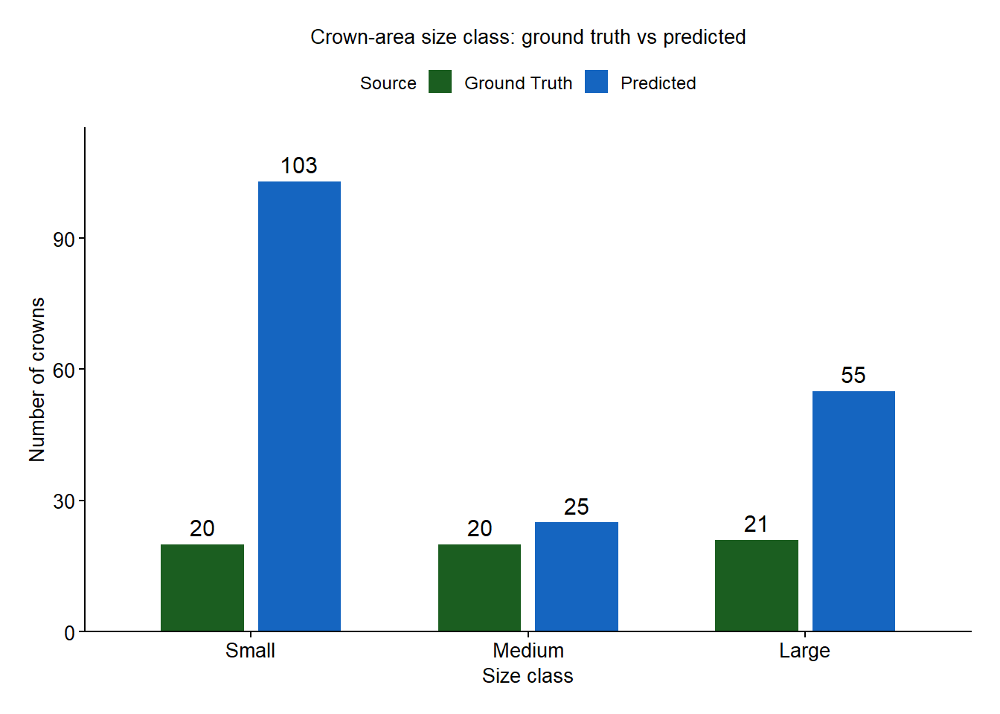